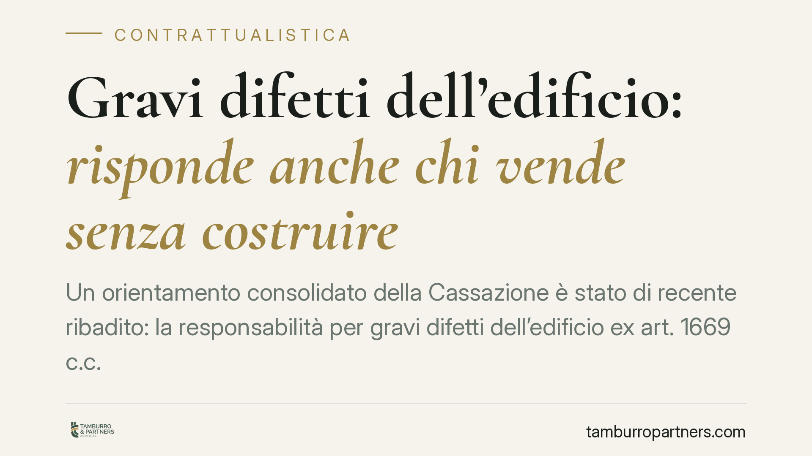

Gravi difetti dell'edificio: risponde anche chi vende senza costruire
Un orientamento consolidato della Cassazione è stato di recente ribadito: la responsabilità per gravi difetti dell'edificio ex art. 1669 c.c. può gravare anche sul venditore che non ha materialmente costruito, purché abbia mantenuto direzione e controllo sul cantiere. Conta la sostanza dell'operazione, non la sola qualifica formale. Vediamo perché la distinzione è rilevante per acquirenti, imprese e professionisti.

Il caso
La questione affrontata è ricorrente nel contenzioso edilizio: un immobile presenta difetti gravi dopo la vendita e l'acquirente si rivolge non all'impresa esecutrice, ma al venditore. Quest'ultimo si difende sostenendo di non aver costruito, ma solo commercializzato l'opera realizzata da un appaltatore.
La Corte, in linea con un indirizzo ormai stabile, ha chiarito che la responsabilità ex art. 1669 del codice civile non richiede necessariamente l'esecuzione materiale dei lavori. Rileva, invece, chi ha diretto e controllato la costruzione: attraverso la scelta del progetto, la nomina del direttore dei lavori, l'imposizione di prescrizioni tecniche.
Inquadramento normativo
L'art. 1669 c.c. disciplina la responsabilità per rovina e gravi difetti dell'edificio. La norma prevede che, quando un'opera destinata a lunga durata rovini in tutto o in parte, ovvero presenti evidente pericolo di rovina o gravi difetti, entro dieci anni dal compimento dell'opera, il costruttore risponda nei confronti del committente e dei suoi aventi causa.
Accanto al termine decennale di garanzia, la disposizione fissa due termini più brevi. La denuncia del difetto va effettuata entro un anno dalla scoperta; l'azione si prescrive in un anno dalla denuncia. Il mancato rispetto di questi termini estingue il diritto: è un profilo da presidiare con attenzione fin dalla comparsa dei primi segnali di anomalia.
La nozione di "gravi difetti" è stata interpretata in senso ampio dalla giurisprudenza. Non riguarda solo i vizi che minacciano la stabilità dell'edificio, ma anche quelli che ne compromettono in modo apprezzabile il godimento o la funzionalità: infiltrazioni diffuse, gravi problemi di isolamento, difetti degli impianti che incidono sulla normale utilizzazione dell'immobile.
Sostanza contro forma: chi risponde davvero
Il punto centrale è la distinzione tra qualifica formale e ruolo sostanziale. Il venditore che si limita a intermediare un bene realizzato da altri non assume, di regola, la responsabilità dell'art. 1669 c.c. Diversa è la posizione di chi, pur affidando l'esecuzione a un appaltatore, governa l'operazione edilizia: predispone o fa proprio il progetto, nomina il direttore dei lavori, detta le prescrizioni tecniche, sorveglia l'andamento del cantiere.
In queste ipotesi il venditore assume la veste sostanziale di venditore-costruttore e risponde dei gravi difetti alla stessa stregua di chi ha materialmente eseguito l'opera. La responsabilità, in questi casi, non nasce dall'esecuzione fisica dei lavori, ma dal dominio dell'attività costruttiva.
La responsabilità solidale con l'appaltatore
L'estensione della responsabilità al venditore-costruttore non esclude quella dell'impresa esecutrice. Quando entrambi i soggetti hanno contribuito, con condotte proprie, al determinarsi dei gravi difetti, la responsabilità può configurarsi in via solidale: l'acquirente può agire indifferentemente contro l'uno o l'altro per l'intero, salvo il successivo regresso interno tra i corresponsabili in base alle rispettive quote di colpa.
È un aspetto che incide sulla strategia processuale e sull'individuazione dei soggetti da citare in giudizio.
Implicazioni pratiche
Per l'acquirente, la pronuncia amplia il novero dei soggetti verso cui indirizzare la pretesa risarcitoria, in particolare quando l'impresa esecutrice è incapiente o cessata. Per il venditore che opera nel settore immobiliare, il messaggio è chiaro: un ruolo attivo nella direzione del cantiere può comportare l'assunzione della responsabilità decennale, anche in assenza di esecuzione diretta.
Per le imprese, diventa rilevante la corretta definizione contrattuale dei rapporti tra committente, venditore e appaltatore, così da rendere tracciabili ruoli, responsabilità e regresso.
Cosa fare in concreto
- Documentare il difetto con tempestività: perizie, fotografie, corrispondenza. La prova dell'epoca di scoperta è decisiva per i termini.
- Rispettare i termini: denunciare il difetto entro un anno dalla scoperta e agire entro un anno dalla denuncia, tenendo presente il limite decennale dal compimento dell'opera.
- Verificare la direzione dei lavori: accertare chi ha scelto il progetto, nominato il direttore dei lavori e impartito le prescrizioni tecniche, per individuare il ruolo sostanziale del venditore.
- Valutare la posizione dei diversi soggetti coinvolti, considerando la possibile responsabilità solidale tra venditore-costruttore e appaltatore.
- Conservare la documentazione contrattuale dell'operazione edilizia, utile a ricostruire i rapporti e le rispettive responsabilità.
---
*Contributo informativo a cura di Tamburro & Partners Avvocati. Non costituisce parere legale.*
Ogni contratto ha il suo equilibrio.
Se vuoi una revisione delle clausole o una redazione su misura, scrivi allo studio. Ti rispondiamo entro un giorno lavorativo.